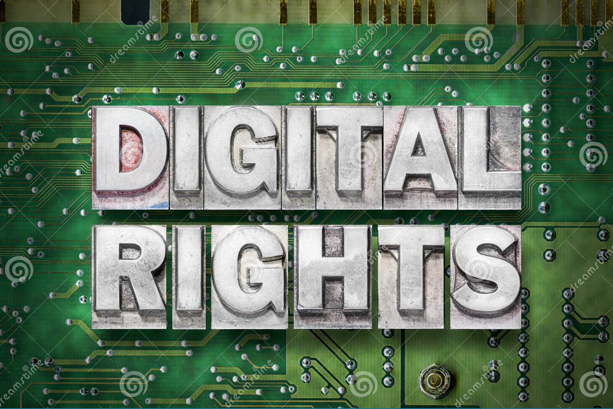

Session 3: Digital Rights

In his paper "The human right to free Internet access", philosopher Merten Reglitz presents an argument that
Internet access is itself a moral human right that requires that everyone has unmonitored and uncensored access to this global medium, which should be publicly provided free of charge for those unable to afford it. Rather than being a mere luxury, Internet access should be considered a universal entitlement because it is necessary for people to be able to lead minimally decent lives. Accepting this claim transforms our conception of the Internet from a technology to that of a basic right.
Lecture Materials
Additional Resources
The following sites and articles are recommended for further independent study.
Articles
- Merten Reglitz paper: The human right to free Internet access
-
Reuters:
U.S. data privacy laws to enter new era in 2023
Note: The above article includes a good explanation of GDPR. - NYU Law School: Net Neutrality Explained
- ACLU: What is Net Neutrality
United Nations
- Secretary-General's Roadmap for Digital Cooperation
- Human Right's Council Report of the Special Rapporteur on the promotion and protection of the right to freedom of opinion and expression
EU General Data Protection Regulation (GDPR)
Sites to explore
- Electronic Frontier Foundation
- World Wide Web Consortium
- World Wide Web Foundation
- Internet Society
- Center for Democracy & Technology
Bibliography
The complete bibliography for the course can be accessed using this link.
Discussion Prompts
- If you were to create an Internet Bill of Rights, what would your main priorities be?
- Do you think the Internet should be censored (possibly similar to restrictions imposed by the FCC on over-the-air TV and radio broadcasters? Why or why not?
- Do you think net neutrality should be government regulated or not? Why?